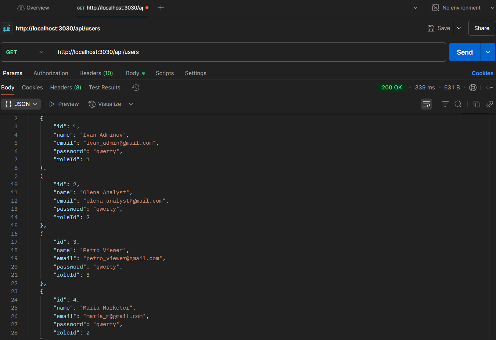
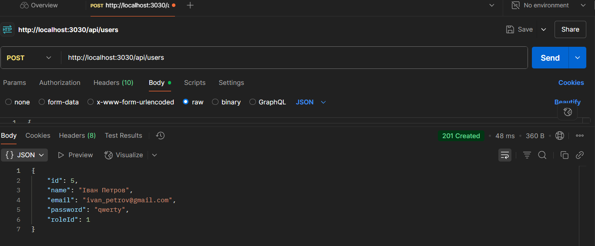
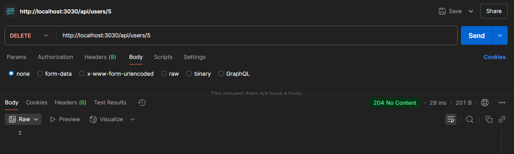
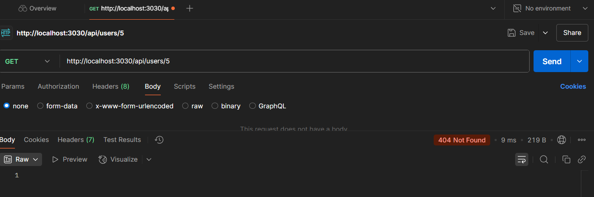
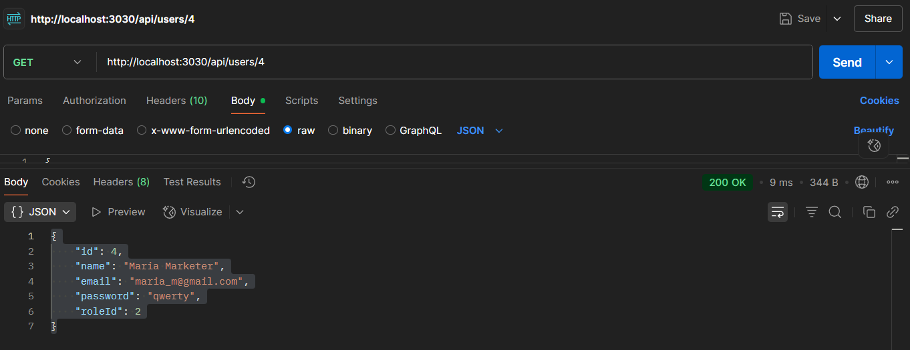
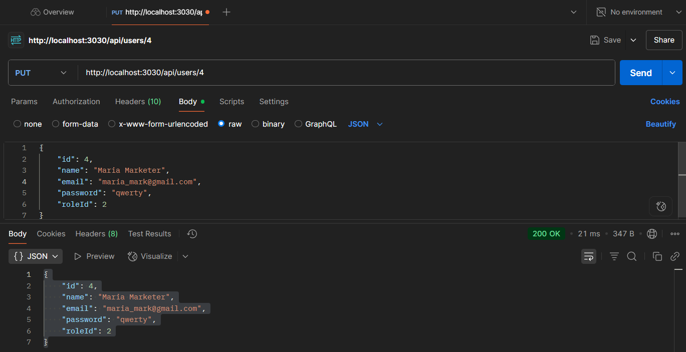
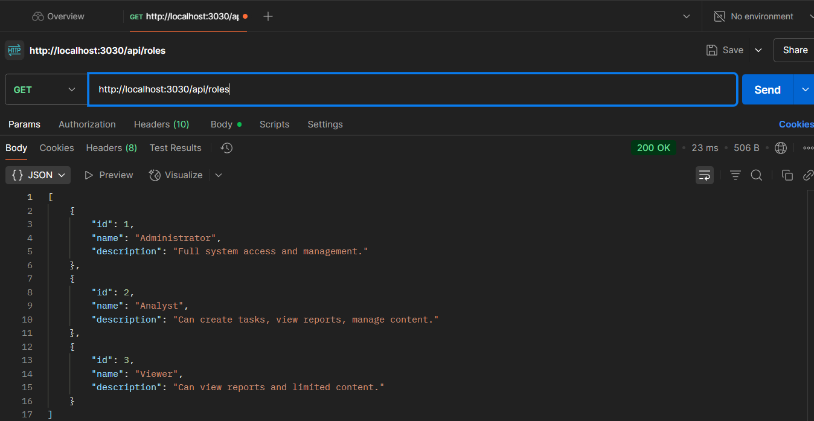

Виконав
студент 2-го курсу, групи ІО-з31 Нікіта Поляков Telegram
Керівник
доцент кафедри ОТ ФІОТ, к.т.н., доцент Андрій БОЛДАК
НТУУ "КИЇВСЬКИЙ ПОЛІТЕХНІЧНИЙ ІНСТИТУТ імені ІГОРЯ СІКОРСЬКОГО
Факультет інформатики та обчислювальної техніки
Кафедра обчислювальної техніки
Київ
Вступ
Робота зосереджена на створенні MediaInsight — інтелектуального інструменту, призначеного для автоматизованого збору, обробки та аналізу різнорідної медіа-інформації (текст, зображення, аудіо, відео). Для сучасних компаній та організацій є критично важливим розуміти, як медіа впливає на їхній бренд та діяльність, а також оперативно аналізувати громадську думку та реакцію на продукти чи події.
Метою розробки є створення масштабованої, гнучкої та високоточної системи, яка допоможе користувачам отримувати глибинні уявлення про інформаційний простір. Це дозволить ефективно використовувати величезний обсяг медіа-даних для прийняття обґрунтованих рішень, моніторингу репутації та виявлення ключових трендів.
Основні технічні розробки включатимуть: використання передових алгоритмів обробки природної мови (NLP) та комп'ютерного зору (Computer Vision) для глибинного аналізу; підтримку мультимодального аналізу контенту; механізми інтеграції з численними зовнішніми джерелами даних (API соціальних мереж, новинні портали); а також інтуїтивно зрозумілі інструменти візуалізації та звітності.
Очікувані техніко-економічні характеристики системи передбачають забезпечення високої стабільності роботи, надійного захисту даних, високої продуктивності для обробки великих обсягів інформації в реальному часі, а також зручності у використанні та підтримці. Впровадження MediaInsight дозволить оптимізувати робочі процеси, підвищити швидкість та якість аналітичних висновків, сприяючи кращому розумінню динаміки суспільного життя та ринкових тенденцій.
Розроблення загальних вимог до системи
Аналіз предметної області
Вступ
Цей документ представляє аналіз предметної області для розробки Системи аналізу медіа-контенту. Він охоплює ключові визначення, існуючі підходи до вирішення подібних завдань, а також порівняльну характеристику наявних програмних рішень. Мета аналізу — закласти основу для обґрунтованого рішення щодо доцільності розробки нової системи або модифікації існуючої, а також визначити необхідність і способи інтеграції з зовнішніми сервісами.
Основні визначення
У цьому розділі наведено визначення ключових термінів та скорочень, що використовуються в контексті аналізу предметної області Системи аналізу медіа-контенту:
- Медіа-контент: Будь-яка інформація, представлена у цифровому форматі, що може включати текст, зображення, аудіо та відео.
- Аналіз медіа-контенту: Процес вилучення, обробки та інтерпретації інформації з медіа-контенту для отримання цінних відомостей, тенденцій або закономірностей.
- Система аналізу медіа-контенту: Програмне забезпечення або комплекс програмних засобів, призначених для автоматизації процесів збору, обробки, аналізу та візуалізації медіа-контенту.
- NLP (Natural Language Processing - Обробка природної мови): Галузь штучного інтелекту, що займається взаємодією комп'ютерів з природними мовами для аналізу, розуміння та генерації людської мови.
- Комп'ютерний зір (Computer Vision): Галузь штучного інтелекту, що дозволяє комп'ютерам "бачити" та інтерпретувати зображення та відео.
- Машинне навчання (Machine Learning): Розділ штучного інтелекту, що дозволяє комп'ютерним системам "навчатися" на даних без явного програмування.
- API (Application Programming Interface): Набір правил і визначень, за допомогою яких різні програмні компоненти можуть взаємодіяти один з одним.
- FURPS: Акронім, що використовується для класифікації вимог до програмного забезпечення:
- Functionality (Функціональність): Функціональні вимоги до системи.
- Usability (Зручність використання): Вимоги до зручності роботи користувачів з системою.
- Reliability (Надійність): Вимоги до стабільності та безвідмовності роботи системи.
- Performance (Продуктивність): Вимоги до швидкодії та ефективності системи.
- Supportability (Зручність підтримки): Вимоги до легкості модифікації, тестування та супроводу системи.
Підходи та способи вирішення завдання
Вирішення завдання аналізу медіа-контенту може бути реалізовано за допомогою різних підходів та моделей, залежно від типу контенту та поставлених цілей. Основні з них включають:
- Аналіз текстового контенту:
- NLP-методи: Для вилучення ключових слів, ідентифікації сутностей (імен, організацій, місць), сентимент-аналізу (визначення тональності тексту), тематичного моделювання.
- Виявлення плагіату: Порівняння текстів для визначення унікальності або запозичень.
- Класифікація текстів: Автоматичне віднесення текстів до певних категорій.
- Узагальнення тексту: Автоматичне створення коротких викладів довгих текстів.
- Аналіз зображень та відео:
- Комп'ютерний зір: Для розпізнавання об'єктів, облич, сцен, ідентифікації логотипів.
- Аналіз метаданих: Вилучення інформації про зображення/відео (дата створення, геолокація, тип пристрою).
- Виявлення контенту, що порушує правила: Автоматичне виявлення небажаного або небезпечного контенту.
- Відстеження рухів: Аналіз відеопотоків для виявлення та відстеження об'єктів у русі.
- Аналіз аудіоконтенту:
- Розпізнавання мови (Speech-to-Text): Перетворення аудіо на текст для подальшого текстового аналізу.
- Ідентифікація диктора: Розпізнавання того, хто говорить.
- Аналіз емоцій в мові: Визначення емоційного забарвлення мовлення.
- Розпізнавання звуків: Ідентифікація різних звуків (музика, шум, специфічні сигнали).
- Комплексні підходи:
- Мультимодальний аналіз: Комбінування різних типів даних (текст + зображення + аудіо) для отримання глибшого розуміння контенту.
- Інтеграція з базами даних: Зберігання та індексація проаналізованого контенту та метаданих для швидкого пошуку та аналізу.
- Візуалізація даних: Представлення результатів аналізу в зручних для сприйняття форматах (графіки, діаграми, дашборди).
Порівняльна характеристика існуючих засобів вирішення завдання
На ринку існує низка програмних рішень, призначених для аналізу медіа-контенту. Нижче представлена порівняльна характеристика трьох заданих аналогів: Semantrum, Neticle Media Intelligence та YouScan, за критеріями FURPS.
| Властивість / Засіб | Semantrum | Neticle Media Intelligence | YouScan |
|---|---|---|---|
| Functionality (Функціональні вимоги) | Моніторинг: Широке охоплення джерел (новини, ЗМІ, соціальні мережі, ТБ, радіо). Аналіз: Сентимент-аналіз, тематичний аналіз, виявлення трендів, ідентифікація ключових осіб, моніторинг репутації, кризовий моніторинг. Звіти: Настроювані звіти та дашборди. Підтримує українську мову. | Моніторинг: Охоплення онлайн-ЗМІ, блоги, форуми, соціальні мережі. Основний фокус на моніторингу репутації, брендів. Аналіз: Сентимент-аналіз (з акцентом на європейські мови), ідентифікація інфлуенсерів, аналіз конкурентів. Звіти: Стандартні та кастомізовані звіти, візуалізація даних. Може мати обмежену підтримку української мови порівняно з Semantrum. | Моніторинг: Глибокий моніторинг соціальних мереж, онлайн-ЗМІ, відгуків. Основна перевага – візуальний аналіз зображень. Аналіз: Розширений сентимент-аналіз (в т.ч. іронія, сарказм), тематичний аналіз, виявлення трендів, аналіз візуального контенту (розпізнавання логотипів, сцен, об'єктів). Звіти: Інтерактивні дашборди, автоматичні та ручні звіти. Добре підтримує українську мову. |
| Usability (Вимоги до зручності роботи) | Інтуїтивно зрозумілий інтерфейс, зручні фільтри для даних, настроювані дашборди. Вимагає певного часу для освоєння всіх функцій, але є достатньо дружнім до користувача. | Досить простий та зрозумілий інтерфейс. Орієнтований на маркетологів та PR-спеціалістів, що робить його доступним для нетехнічних користувачів. | Сучасний, візуально привабливий та дуже зручний інтерфейс. Особливий акцент на візуалізації даних робить його легким для сприйняття. Швидке освоєння базових функцій. |
| Reliability (Вимоги до надійності) | Висока надійність. Системи такого класу зазвичай мають відмовостійку архітектуру, резервне копіювання даних та високу доступність сервісу. | Висока надійність. Як і інші комерційні SaaS-рішення, забезпечує стабільну роботу та захист даних користувачів. | Висока надійність. Забезпечує стабільну роботу, постійний доступ до даних та безперебійний моніторинг завдяки хмарній інфраструктурі. |
| Performance (Вимоги до продуктивності) | Висока продуктивність для обробки великих обсягів даних у реальному часі або близько до реального часу. Швидке генерування звітів та завантаження даних. | Оптимізований для швидкого збору та аналізу медіа-даних. Швидкість обробки залежить від обсягу даних та складності запитів. | Висока продуктивність, особливо у частині обробки візуального контенту. Швидке індексування великих обсягів даних та генерація звітів. |
| Supportability (Вимоги до підтримки) | Регулярні оновлення функціоналу та баз даних джерел. Технічна підтримка, навчальні матеріали, можливість персонального менеджера. | Технічна підтримка, оновлення платформи, консультації. Може мати регіональні особливості в рівні підтримки. | Активна технічна підтримка, велика база знань, регулярні оновлення, вебінари та навчальні матеріали. Спільнота користувачів. |
Висновки
Аналіз предметної області показав, що обробка та інтерпретація медіа-контенту стає дедалі важливішою функцією в сучасному інформаційному середовищі. Збільшення обсягів різнорідних даних вимагає ефективних рішень.
Розглянуті комерційні інструменти, такі як Semantrum, Neticle Media Intelligence та YouScan, надають спеціалізовані можливості для моніторингу та аналізу. Однак, їхня функціональність часто фокусується на окремих типах даних або джерелах, що може обмежувати комплексний підхід до аналізу всієї панорами медіа-контенту.
З огляду на це, розробка нової інформаційної системи є доцільною. Така система зможе забезпечити:
- Комплексність аналізу: Можливість інтегрованої обробки текстових, візуальних та аудіоданих з різних медіа-джерел в рамках однієї платформи.
- Глибину інтерпретації: Застосування вдосконалених методів штучного інтелекту та машинного навчання для виявлення складніших закономірностей, що може бути недоступним у стандартних комерційних рішеннях.
- Гнучкість та контроль: Можливість адаптації функціоналу під специфічні потреби користувача та збереження контролю над обробкою даних.
Для оптимізації процесу та розширення охоплення джерел, інтеграція з зовнішніми сервісами буде необхідною. Це дозволить:
- Ефективний збір даних: Використання API соціальних мереж, новинних платформ та інших великих джерел для автоматизованого отримання контенту.
- Доступ до спеціалізованих можливостей: Залучення хмарних обчислювальних ресурсів або спеціалізованих AI-сервісів для виконання окремих високооб'ємних або складних завдань, якщо їх реалізація in-house є недоцільною.
Таким чином, модифікація існуючих систем може мати обмеження, оскільки вони часто створювалися для вузьких завдань. Створення ж нової, спеціалізованої системи з урахуванням сучасних викликів забезпечить ширший функціонал та адаптивність до різноманітних типів контенту.
Впровадження такої системи має потенціал для покращення процесів, що базуються на медіа-інформації. Вона може сприяти більш обґрунтованому прийняттю рішень, оптимізації взаємодії з аудиторією та підвищенню ефективності роботи з інформаційними потоками.
Запити зацікавлених осіб
Вступ
Цей документ містить зведену інформацію про необхідні інструменти для досягнення системних завдань, а саме - опис запитів та очікувань зацікавлених осіб щодо системи аналізу медіа-контенту.
Мета
Мета цього проекту – оцінка та аналіз запитів і очікувань зацікавлених осіб щодо системи аналізу медіа-контенту. Це дозволить визначити вимоги до її створення та впровадження.
Контекст
Цей документ визначає вимоги до технічних характеристик системи, її стабільності та функціональності. Він також аналізує взаємодію між користувачами, системою та адміністраторами.
Короткий зміст
У цій частині документа, що залишилася, детально описуються:
- Характеристика ділових процесів
- Короткий огляд продукту
- Функціональність
- Практичність
- Надійність
- Продуктивність
- Експлуатаційна придатність
Характеристика ділових процесів
У цьому розділі визначаються зовнішні фактори, що впливають на бізнес (бізнес-актори), та внутрішні фактори (працівники). Дається загальна характеристика діяльності бізнес-акторів та працівників, яка здійснюється за допомогою бізнесу.
Дається опис бізнес-сценаріїв взаємодії бізнес-акторів, працівників і, можливо, інформаційної системи за допомогою наступної специфікації:
Користувач
Авторизація
| ID: | user_login |
|---|---|
| НАЗВА: | Авторизація користувача |
| УЧАСНИКИ: | Користувач, система |
| ПЕРЕДУМОВИ: | Користувач вже має обліковий запис в системі |
| РЕЗУЛЬТАТ: | Користувач авторизований у системі |
| ВИКЛЮЧНІ СИТУАЦІЇ: | wrong_password Введений хибний пароль |
no_user Користувач не зареєстрований у системі | |
| ОСНОВНИЙ СЦЕНАРІЙ: | 1. Користувач тисне на кнопку "Увійти" |
| 2. Користувач отримує поля для вводу даних і вводить пароль та логін для свого облікового запису | |
| 3. Користувач натискає кнопку "Увійти" і відсилає дані системі | |
| 4. Система авторизує користувача (можливі wrong_password та no_user) |
Реєстрація
| ID: | user_register |
|---|---|
| НАЗВА: | Реєстрація користувача |
| УЧАСНИКИ: | Користувач, система |
| ПЕРЕДУМОВИ: | Користувач не має облікового запису в системі |
| РЕЗУЛЬТАТ: | Користувач має акаунт |
| ВИКЛЮЧНІ СИТУАЦІЇ: | user_exists Обліковий запис з такими даними вже існує |
wrong_credentials Неправильно введені дані | |
| ОСНОВНИЙ СЦЕНАРІЙ: | 1. Користувач тисне на кнопку "Зареєструватися" |
| 2. Користувач отримує поля для вводу даних і вводить реєстраційні дані для свого облікового запису | |
3. Користувач натискає кнопку "Зареєструватися" і відсилає дані системі (можлива wrong_credentials) | |
4. Система реєструє користувача (можлива user_exists) |
Пошук та фільтрація даних
| ID: | media_discover |
|---|---|
| НАЗВА: | Пошук та фільтрація даних |
| УЧАСНИКИ: | Користувач, система |
| ПЕРЕДУМОВИ: | Користувач виконав авторизацію в системі |
| РЕЗУЛЬТАТ: | Користувач отримав потрібну інформацію, що була зібрана і проаналізована системою |
| ВИКЛЮЧНІ СИТУАЦІЇ: | no_data За запитом нічого не знайдено |
| ОСНОВНИЙ СЦЕНАРІЙ: | 1. Користувач обирає потрібні йому фільтри та тисне на кнопку "Пошук" |
2. Система починає пошук медіа контенту в базі за вказаними фільтрами (можлива no_data) | |
| 3. Система повертає рехультат пошуку користувачеві |
Адміністратор
Надати додаткові права
| ID: | add_rights |
|---|---|
| НАЗВА: | Надати додаткові права користувачу |
| УЧАСНИКИ: | Адміністратор, користувач, система |
| ПЕРЕДУМОВИ: | Користувач потребує додаткові права в системі |
| РЕЗУЛЬТАТ: | Користувач отримує додаткові права в системі |
| ВИКЛЮЧНІ СИТУАЦІЇ: | user_not_found Користувача не знайдено в системі |
already_has_rights Користувач вже має додаткові права в системі | |
rights_deny Адміністратор відмовляє користувачеві в наданні додаткових прав у системі | |
| ОСНОВНИЙ СЦЕНАРІЙ: | 1. Користувач надає запит на отримання додаткових прав в системі |
| 2. Адміністратор отримує запит користувача на отримання додаткових прав в системі (можлива rights_deny) | |
| 3. Адміністратор надає додаткові права користувачу в системі (можливі user_not_found та already_has_rights) | |
| 4. Користувач отримує додаткові права в системі |
Додати нове джерело
| ID: | add_source |
|---|---|
| НАЗВА: | Додати нове джерело інформації в систему |
| УЧАСНИКИ: | Адміністратор, система |
| ПЕРЕДУМОВИ: | Адміністратор хоче додати нове джерело інформації в систему |
| РЕЗУЛЬТАТ: | В систему успішно додано нове джерело інформації |
| ВИКЛЮЧНІ СИТУАЦІЇ: | invalid_source Джерело не дійсне |
already_added_source Джерело вже було додано в систему раніше | |
| ОСНОВНИЙ СЦЕНАРІЙ: | 1. Адміністратор створює нове джерело інформації, натиснувши на кнопку "Додати джерело" |
| 2. Адміністратор вводить посилання на джерело | |
| 3. Система проводить перевірку на валідність джерела (можливі invalid_source та already_added_source) | |
| 4. Система додає нове джерело до списку доступних джерел інформації |
Видалити обліковий запис користувача
| ID: | delete_account |
|---|---|
| НАЗВА: | Видалити обліковий запис користувача |
| УЧАСНИКИ: | Адміністратор, система |
| ПЕРЕДУМОВИ: | Певний обліковий запис користувача має бути видалений з системи |
| РЕЗУЛЬТАТ: | Обліковий запис видалено з системи |
| ВИКЛЮЧНІ СИТУАЦІЇ: | delete_deny Адміністратор відхиляє запит на видалення облікового запису |
already_deleted Обліковий запис був видалений з системи раніше | |
| ОСНОВНИЙ СЦЕНАРІЙ: | 1. Адміністратор отримує запит на видалення облікового запису (можлива delete_deny) |
| 2. Адміністратор дає згоду на видалення облікового запису | |
3. Система перевіряє наявність облікового запису користувача (можлива already_deleted) | |
| 4. Система видаляє обліковий запис користувача |
Короткий огляд продукту
MediaInsight — це рішення, призначене для визначення та аналізу різних параметрів медіа-контенту, включаючи текст, зображення та відео. Вона дозволяє користувачам ефективно обробляти та розуміти велику кількість медіа-даних.
Функції цього продукту включають аналіз тексту, зображень та відео, розпізнавання об'єктів, сентимент-аналіз, візуалізацію даних, фільтрацію та сортування, а також можливість інтеграції з іншими системами. Ці функції сприяють більш точному та швидкому аналізу медіа-контенту, що може бути корисним для прийняття рішень у різних галузях.
MediaInsight може бути корисною для фахівців у галузі ЗМІ, маркетингу, PR, а також для наукових досліджень та інших сфер, де важливий глибокий аналіз інформації.
Функціональність
Функціональність для користувачів:
- Користувачі можуть завантажувати та надсилати до системи текст, зображення і відео для аналізу.
- Користувачі можуть ініціювати поглиблений аналіз завантаженого контенту.
- Користувачі можуть досліджувати проаналізований контент за допомогою зручного інтерфейсу.
- Система пропонує користувачам інструменти візуалізації даних.
- Користувачі можуть шукати певний вміст або застосовувати фільтри для звуження результатів.
- Користувачі можуть інтегрувати систему з іншими додатками або сервісами, використовуючи її аналітичні можливості в існуючих робочих процесах.
Функціональність для адміністраторів:
- Адміністратори можуть керувати обліковими записами користувачів, зокрема створювати, змінювати та видаляти профілі.
- Адміністратори можуть налаштовувати та контролювати параметри контент-аналізу. Вони можуть встановлювати правила для розпізнавання об'єктів, аналізу тональності та інших аналітичних функцій.
- Адміністратори можуть налаштовувати загальні параметри системи, включаючи алгоритми аналізу, політики збереження даних та параметри інтеграції.
- Адміністратори можуть забезпечувати безпеку системи, встановлюючи контроль доступу та методи аутентифікації.
Практичність
Завдяки широкій функціональності та здатності працювати з різними типами медіа-контенту, MediaInsight є потужним та практичним інструментом для аналізу та розуміння великих обсягів даних. Вона має бути інтуїтивно зрозумілою та легкою в освоєнні.
Надійність
MediaInsight має наступні вимоги до надійності:
- Стабільність роботи: Система повинна бути стабільною і здатною працювати безперебійно протягом тривалого часу.
- Безпека даних: Система повинна забезпечувати конфіденційність та цілісність даних, запобігаючи несанкціонованому доступу до них.
- Стійкість: Система має бути стійкою до різних збоїв і помилок. У разі їх виникнення система повинна швидко відновлюватися та продовжувати штатну роботу без втрат даних та шкоди для основної функціональності.
- Резервне копіювання та можливість відновлення: Система має створювати резервні копії даних з можливістю відновлення цих даних заради запобігання безповоротній втраті інформації у разі неполадок.
- Відстеження та реєстрація помилок: Система повинна мати механізми для відстеження та реєстрації помилок та збоїв для ефективного аналізу та усунення несправностей.
Продуктивність
MediaInsight розроблена з урахуванням високої продуктивності та швидкості обробки медіа-контенту, щоб забезпечити користувачам ефективну роботу з великими обсягами даних. Ось ключові аспекти продуктивності:
- Швидкий аналіз медіа-даних: Система забезпечує швидкий аналіз тексту, зображень і відео, дозволяючи ефективно обробляти великі обсяги медіа-контенту.
- Масштабованість: Система повинна легко масштабуватися, щоб впоратися зі зростанням обсягу даних та збільшенням кількості користувачів без втрати продуктивності.
- Оптимізація ресурсів: Система має ефективно використовувати системні ресурси, дозволяючи отримувати результати аналізу без надмірного навантаження на обчислювальні потужності.
MediaInsight спроектована з урахуванням продуктивності та ефективності, щоб надавати користувачам засоби для швидкого та точного аналізу медіа-даних у різних галузях.
Експлуатаційна придатність
Експлуатаційна придатність MediaInsight включає низку важливих аспектів, які роблять її використання зручним та продуктивним:
- Інтуїтивний інтерфейс: Система пропонує користувачам дружній та легко зрозумілий інтерфейс, що спрощує навчання та роботу з програмою. Важливі функції легко доступні та інтуїтивно зрозумілі.
- Швидкість та продуктивність: Система працює ефективно та швидко обробляє великі обсяги медіа-контенту. Швидкість реакції дозволяє користувачам ефективно аналізувати дані без зайвої затримки.
- Доступ до підтримки: Система має надавати доступ до технічної підтримки та документації, що допомагає користувачам вирішувати будь-які технічні питання та проблеми.
- Безпека та конфіденційність: Програма повинна забезпечувати захист конфіденційності даних та відповідати стандартам безпеки, що важливо для багатьох галузей, особливо тих, де обробляється конфіденційна інформація.
Загальною метою експлуатаційної придатності є забезпечення зручності, ефективності та безпеки використання MediaInsight для досягнення найкращих результатів у різних галузях та завданнях.
Розроблення функціональних вимог до системи
Модель прецедентів
У цьому розділі представлена модель прецедентів (use case model), яка візуалізує та деталізує функціональні можливості Системи аналізу медіа-контенту з точки зору взаємодії з користувачами та адміністраторами.
Діаграма кейсів
@startuml
top to bottom direction
actor "Користувач" as User
actor "Адміністратор" as Admin
Admin -u-|> User
usecase "user_register\nРеєстрація" as Registration
usecase "user_login\nАвторизація" as Login
usecase "media_search\nПошук даних за фільтрами" as SearchAndFilter
User -l-> Registration
User -r-> Login
User -u-> SearchAndFilter
usecase "acc_manip\nКерування обліковими\n записами користувачів" as ManipAccount
usecase "source_manip\nКерування джерелами інформації" as ManipSource
Admin --> ManipAccount
Admin --> ManipSource
@enduml
Схема використання для користувача
Ця діаграма відображає основні функціональні можливості, доступні звичайному користувачеві системи.
@startuml
actor "Користувач" as User
usecase "user_register\nРеєстрація" as Registration
usecase "user_login\nАвторизація" as Login
usecase "media_search\nПошук даних за фільтрами" as SearchWithFilters
usecase "pass_rec\nВідновлення паролю" as PasswordRecovery
User --> Registration
User --> Login
PasswordRecovery .u.> Login: <<extends>>
User --> SearchWithFilters
@enduml
Схема використання для адміністратора
Ця діаграма демонструє функції, які доступні лише адміністратору системи для управління та конфігурації.
@startuml
actor "Адміністратор" as Admin
usecase "acc_manip\nКерування обліковими\n записами користувачів" as ManipAccount
usecase "source_manip\nКерування джерелами інформації" as ManipSource
usecase "delete_account\nВидалення облікового запису\n користувача" as DeleteAccount
usecase "add_source\nДодавання нового джерела" as AddSource
usecase "add_rights\nНадання додаткових прав\n користувачу" as GrantPermissions
usecase "delete_source\nВидалення джерела" as DeleteSource
Admin --> ManipAccount
DeleteAccount .u.> ManipAccount: <<extends>>
GrantPermissions .u.> ManipAccount: <<extends>>
Admin --> ManipSource
AddSource .u.> ManipSource: <<extends>>
DeleteSource .u.> ManipSource: <<extends>>
@enduml
Сценарії використання для користувача
Реєстрація
| ID: | user_register |
|---|---|
| НАЗВА: | Реєстрація користувача |
| УЧАСНИКИ: | Користувач, система |
| ПЕРЕДУМОВИ: | Користувач не має облікового запису в системі |
| РЕЗУЛЬТАТ: | Користувач має акаунт |
| ВИКЛЮЧНІ СИТУАЦІЇ: | user_exists Обліковий запис з такими даними вже існує |
wrong_credentials Неправильно введені дані | |
| ОСНОВНИЙ СЦЕНАРІЙ: | 1. Користувач тисне на кнопку "Зареєструватися" |
| 2. Користувач отримує поля для вводу даних і вводить реєстраційні дані для свого облікового запису | |
3. Користувач натискає кнопку "Зареєструватися" і відсилає дані системі (можлива wrong_credentials) | |
4. Система реєструє користувача (можлива user_exists) |
@startuml
|Користувач|
start
:Користувач натискає на кнопку "Зареєструватися";
|Система|
:Система отримує запит на реєстрацію;
:Система надсилає форму для реєстрації;
|Користувач|
:Користувач отримує форму \nдля реєстрації і заповнює її;
:Користувач натискає на кнопку "Зареєструватися";
|Система|
:Система отримує дані з форми;
:Система перевіряє дані користувача;
note right #ffaaaa
wrong_credentials
user_exists
end note
:Система реєструє новий обліковий запис;
|Користувач|
:Користувач отримує доступ \nдо свого нового облікового запису;
stop;
@enduml
Авторизація
| ID: | user_login |
|---|---|
| НАЗВА: | Авторизація користувача |
| УЧАСНИКИ: | Користувач, система |
| ПЕРЕДУМОВИ: | Користувач вже має обліковий запис в системі |
| РЕЗУЛЬТАТ: | Користувач авторизований у системі |
| ВИКЛЮЧНІ СИТУАЦІЇ: | wrong_password Введений хибний пароль |
no_user Користувач не зареєстрований у системі | |
| ОСНОВНИЙ СЦЕНАРІЙ: | 1. Користувач тисне на кнопку "Увійти" |
| 2. Користувач отримує поля для вводу даних і вводить пароль та логін для свого облікового запису | |
| 3. Користувач натискає кнопку "Увійти" і відсилає дані системі | |
4. Система авторизує користувача (можливі wrong_password та no_user) |
@startuml
|Користувач|
start
:Користувач натискає на кнопку "Увійти";
|Система|
:Система отримує запит на авторизацію;
:Система надсилає форму для авторизації;
|Користувач|
:Користувач отримує форму \nдля авторизації і заповнює її;
:Користувач натискає на кнопку "Увійти";
|Система|
:Система отримує дані з форми;
:Система перевіряє дані користувача;
note right #ffaaaa
wrong_password
no_user
end note
:Система надає користувачу доступ \nдо його облікового запису;
|Користувач|
:Користувач отримує доступ \nдо свого облікового запису;
stop;
@enduml
Пошук та фільтрація даних
| ID: | media_discover | |
|---|---|---|
| НАЗВА: | Пошук та фільтрація даних | |
| УЧАСНИКИ: | Користувач, система | |
| ПЕРЕДУМОВИ: | Користувач виконав авторизацію в системі | |
| РЕЗУЛЬТАТ: | Користувач отримав потрібну інформацію, що була зібрана і проаналізована системою | |
| ВИКЛЮЧНІ СИТУАЦІЇ: | no_data За запитом нічого не знайдено | |
| ОСНОВНИЙ СЦЕНАРІЙ: | 1. Користувач обирає потрібні йому фільтри та тисне на кнопку "Пошук" | |
2. Система починає пошук медіа контенту в базі за вказаними фільтрами (можлива no_data) | ||
| 3. Система повертає рехультат пошуку користувачеві |
@startuml
|Користувач|
start
:Користувач натискає на кнопку "Пошук";
|Система|
:Система отримує запит на пошук;
:Система надсилає форму з фільтрами \nдля більш детального пошуку;
|Користувач|
:Користувач отримує форму \nдля пошуку і заповнює її;
:Користувач натискає на кнопку "Пошук";
|Система|
:Система отримує дані з форми;
:Система здійснює пошук інформації \nза вказаними фільтрами;
note right #ffaaaa
no_data
end note
:Система формує звіт по знайденій інформації;
:Система відправляє користувачу сформований звіт;
|Користувач|
:Користувач отримує звіт по інформації, \nяку хотів знайти;
stop;
@enduml
Сценарії викристання для адміністратора
Надання додаткових прав
| ID: | add_rights |
|---|---|
| НАЗВА: | Надати додаткові права користувачу |
| УЧАСНИКИ: | Адміністратор, користувач, система |
| ПЕРЕДУМОВИ: | Користувач потребує додаткові права в системі |
| РЕЗУЛЬТАТ: | Користувач отримує додаткові права в системі |
| ВИКЛЮЧНІ СИТУАЦІЇ: | user_not_found Корисувача не знайдено в системі |
already_has_rights Користувач вже має додаткові права в системі | |
rights_deny Адміністратор відмовляє користувачеві в наданні додаткових прав у системі | |
| ОСНОВНИЙ СЦЕНАРІЙ: | 1. Користувач надає запит на отримання додаткових прав в системі |
2. Адміністратор отримує запит користувача на отримання додаткових прав в системі (можлива rights_deny) | |
3. Адміністратор надає додаткові права користувачу в системі (можливі user_not_found та already_has_rights) | |
| 4. Користувач отримує додаткові права в системі |
@startuml
|Користувач|
start
:Користувач надає запит адміністратору \nна отримання додаткових прав в системі;
|Адміністратор|
:Адміністратор отримує запит користувача \nна отримання додаткових прав в системі;
note right #ffaaaa
rights_deny
end note
:Адміністратор надає користувачу \nдодаткові права в системі;
note right #ffaaaa
user_not_found
already_has_rights
end note
|Користувач|
:Користувач отримує додаткові права в системі;
stop;
@enduml
Додання нового джерела
| ID: | add_source |
|---|---|
| НАЗВА: | Додати нове джерело інформації в систему |
| УЧАСНИКИ: | Адміністратор, система |
| ПЕРЕДУМОВИ: | Адміністратор хоче додати нове джерело інформації в систему |
| РЕЗУЛЬТАТ: | В систему успішно додано нове джерело інформації |
| ВИКЛЮЧНІ СИТУАЦІЇ: | invalid_source Джерело не дійсне |
already_added_source Джерело вже було додано в систему раніше | |
| ОСНОВНИЙ СЦЕНАРІЙ: | 1. Адміністратор створює нове джерело інформації, натиснувши на кнопку "Додати джерело" |
| 2. Адміністратор вводить посилання на джерело | |
3. Система проводить перевірку на валідність джерела (можливі invalid_source та already_added_source) | |
| 4. Система додає нове джерело до списку доступних джерел інформації |
@startuml
|Адміністратор|
start
:Адміністратор натискає на кнопку "Додати джерело";
|Система|
:Система отримує запит \nна додання нового джерела;
:Система надсилає форму \nдля додання нового джерела;
|Адміністратор|
:Адміністратор отримує форму \nдля додання нового джерела;
:Адміністратор у формі вводить посилання на джерело \nта певну додаткову інформацію про це джерело;
:Адміністратор натискає на кнопку "Додати джерело";
|Система|
:Система отримує дані з форми;
:Система перевіряє джерело на валідність;
note right #ffaaaa
invalid_source
already_added_source
end note
:Система додає нове джерело \nдо списку доступних джерел інформації;
|Адміністратор|
stop;
@enduml
Видалення облікового запису користувача
| ID: | delete_account |
|---|---|
| НАЗВА: | Видалити обліковий запис користувача |
| УЧАСНИКИ: | Адміністратор, система |
| ПЕРЕДУМОВИ: | Певний обліковий запис користувача має бути видалений з системи |
| РЕЗУЛЬТАТ: | Обліковий запис видалено з системи |
| ВИКЛЮЧНІ СИТУАЦІЇ: | delete_deny Адміністратор відхиляє запит на видалення облікового запису |
already_deleted Обліковий запис був видалений з системи раніше | |
| ОСНОВНИЙ СЦЕНАРІЙ: | 1. Адміністратор отримує запит на видалення облікового запису (можлива delete_deny) |
| 2. Адміністратор дає згоду на видалення облікового запису | |
3. Система перевіряє наявність облікового запису користувача (можлива already_deleted) | |
| 4. Система видаляє обліковий запис користувача |
@startuml
|Адміністратор|
start
:Адміністратор отримує запит \nна видалення облікового запису;
note left #ffaaaa
delete_deny
end note
:Адміністратор дає згоду \nна видалення облікового запису;
:Адміністратор робить запит \nна видалення облікового запису;
|Система|
:Система отримує запит \nна видалення облікового запису;
:Система перевіряє наявність \nоблікового запису користувача;
note right #ffaaaa
already_deleted
end note
:Система видаляє \nобліковий запис користувача;
|Адміністратор|
stop;
@enduml
Проєктування бази даних
Цей розділ описує структуру даних, які будуть використовуватися системою MediaInsight. Він включає модель бізнес-об'єктів, ER-модель та описує їхню реляційну схему. Ці моделі є фундаментом для проектування бази даних та забезпечення цілісності й ефективності зберігання інформації.
1. Модель бізнес-об'єктів
Модель бізнес-об'єктів представляє основні сутності та концепції, з якими оперує система MediaInsight у контексті її функціональності. Вона відображає взаємодію між основними елементами бізнес-процесів.
@startuml
!theme mars
entity role {
+ id: UUID
--
name: string
description: string
}
entity user {
+ id: UUID
--
name: string
email: string
password: string
role_id: UUID
}
entity media_content {
+ id: UUID
--
title: string
description: string
type: string
file_path: string
user_id: UUID
}
entity project {
+ id: UUID
--
name: string
description: string
user_id: UUID
}
entity analysis_task {
+ id: UUID
--
name: string
status: string
create_at: datetime
user_id: UUID
project_id: UUID
}
entity task_content {
+ media_content_id: UUID
+ analysis_task_id: UUID
--
}
entity report {
+ id: UUID
--
name: string
content: string
create_at: datetime
analysis_task_id: UUID
}
user "1" -- "0..*" role
user "1" -- "0..*" media_content
user "1" -- "0..*" project
user "1" -- "0..*" analysis_task
project "1" -- "0..*" analysis_task
analysis_task "1" -- "0..*" report
media_content "0..*" -- "0..*" task_content
analysis_task "0..*" -- "0..*" task_content
@enduml
2. ER-модель (Модель "сутність-зв'язок")
ER-модель деталізує структуру даних, показуючи сутності, їхні атрибути та типи зв'язків між ними, що є основою для подальшого проектування реляційної бази даних.
@startuml
!define PRIMARY_KEY_COLOR #FFD700
!define FOREIGN_KEY_COLOR #87CEEB
entity "role" as role_tbl {
+ id: INT <<PRIMARY_KEY_COLOR>>
--
name: VARCHAR(64)
description: TEXT
}
entity "user" as user_tbl {
+ id: INT <<PRIMARY_KEY_COLOR>>
--
name: VARCHAR(64)
email: VARCHAR(128)
password: VARCHAR(128)
role_id: INT <<FOREIGN_KEY_COLOR>>
}
entity "media_content" as media_content_tbl {
+ id: INT <<PRIMARY_KEY_COLOR>>
--
title: VARCHAR(128)
description: TEXT
type: VARCHAR(32)
file_path: VARCHAR(128)
user_id: INT <<FOREIGN_KEY_COLOR>>
}
entity "project" as project_tbl {
+ id: INT <<PRIMARY_KEY_COLOR>>
--
name: VARCHAR(64)
description: TEXT
user_id: INT <<FOREIGN_KEY_COLOR>>
}
entity "analysis_task" as analysis_task_tbl {
+ id: INT <<PRIMARY_KEY_COLOR>>
--
name: VARCHAR(64)
status: VARCHAR(64)
create_at: DATETIME
user_id: INT <<FOREIGN_KEY_COLOR>>
project_id: INT <<FOREIGN_KEY_COLOR>>
}
entity "task_content" as task_content_tbl {
+ media_content_id: INT <<FOREIGN_KEY_COLOR>>
+ analysis_task_id: INT <<FOREIGN_KEY_COLOR>>
--
}
entity "report" as report_tbl {
+ id: INT <<PRIMARY_KEY_COLOR>>
--
name: VARCHAR(64)
content: TEXT
create_at: DATETIME
analysis_task_id: INT <<FOREIGN_KEY_COLOR>>
}
user_tbl "1" -- "0..*" role_tbl
user_tbl "1" -- "0..*" media_content_tbl
user_tbl "1" -- "0..*" project_tbl
user_tbl "1" -- "0..*" analysis_task_tbl
project_tbl "1" -- "0..*" analysis_task_tbl
analysis_task_tbl "1" -- "0..*" report_tbl
media_content_tbl "0..*" -- "0..*" task_content_tbl
analysis_task_tbl "0..*" -- "0..*" task_content_tbl
@enduml
3. Реляційна схема
Реляційна схема є деталізованим представленням ER-моделі, адаптованим для конкретної реляційної бази даних. Вона визначає таблиці, їхні колонки, типи даних, первинні та зовнішні ключі, а також обмеження, що забезпечують цілісність даних.

Реалізація інформаційного та програмного забезпечення
SQL-скрипт
SET @OLD_UNIQUE_CHECKS=@@UNIQUE_CHECKS, UNIQUE_CHECKS=0;
SET @OLD_FOREIGN_KEY_CHECKS=@@FOREIGN_KEY_CHECKS, FOREIGN_KEY_CHECKS=0;
SET @OLD_SQL_MODE=@@SQL_MODE, SQL_MODE='NO_ZERO_IN_DATE,NO_ZERO_DATE,ERROR_FOR_DIVISION_BY_ZERO,NO_ENGINE_SUBSTITUTION';
-- -----------------------------------------------------
-- Schema media_insight_db
-- -----------------------------------------------------
DROP SCHEMA IF EXISTS `media_insight_db` ;
-- Changed CHARACTER SET and COLLATE for older MySQL versions
CREATE SCHEMA IF NOT EXISTS `media_insight_db` DEFAULT CHARACTER SET utf8 COLLATE utf8_general_ci ;
USE `media_insight_db` ;
-- -----------------------------------------------------
-- Table `media_insight_db`.`role`
-- -----------------------------------------------------
DROP TABLE IF EXISTS `media_insight_db`.`role` ;
CREATE TABLE IF NOT EXISTS `media_insight_db`.`role` (
`id` INT NOT NULL AUTO_INCREMENT,
`name` VARCHAR(64) NOT NULL UNIQUE,
`description` TEXT,
PRIMARY KEY (`id`)
) ENGINE = InnoDB;
-- -----------------------------------------------------
-- Table `media_insight_db`.`user`
-- -----------------------------------------------------
DROP TABLE IF EXISTS `media_insight_db`.`user` ;
CREATE TABLE IF NOT EXISTS `media_insight_db`.`user` (
`id` INT NOT NULL AUTO_INCREMENT,
`name` VARCHAR(64) NOT NULL,
`email` VARCHAR(128) NOT NULL UNIQUE,
`password` VARCHAR(128) NOT NULL,
`role_id` INT NOT NULL,
PRIMARY KEY (`id`),
INDEX `fk_user_role_idx` (`role_id` ASC),
CONSTRAINT `fk_user_role`
FOREIGN KEY (`role_id`)
REFERENCES `media_insight_db`.`role` (`id`)
ON DELETE NO ACTION
ON UPDATE NO ACTION
) ENGINE = InnoDB;
-- -----------------------------------------------------
-- Table `media_insight_db`.`media_content`
-- -----------------------------------------------------
DROP TABLE IF EXISTS `media_insight_db`.`media_content` ;
CREATE TABLE IF NOT EXISTS `media_insight_db`.`media_content` (
`id` INT NOT NULL AUTO_INCREMENT,
`title` VARCHAR(128) NOT NULL,
`description` TEXT,
`type` VARCHAR(32) NOT NULL,
`file_path` VARCHAR(255),
`user_id` INT NOT NULL,
PRIMARY KEY (`id`),
INDEX `fk_media_content_user_idx` (`user_id` ASC),
CONSTRAINT `fk_media_content_user`
FOREIGN KEY (`user_id`)
REFERENCES `media_insight_db`.`user` (`id`)
ON DELETE NO ACTION
ON UPDATE NO ACTION
) ENGINE = InnoDB;
-- -----------------------------------------------------
-- Table `media_insight_db`.`project`
-- -----------------------------------------------------
DROP TABLE IF EXISTS `media_insight_db`.`project` ;
CREATE TABLE IF NOT EXISTS `media_insight_db`.`project` (
`id` INT NOT NULL AUTO_INCREMENT,
`name` VARCHAR(64) NOT NULL,
`description` TEXT,
`created_at` DATETIME NOT NULL,
`user_id` INT NOT NULL,
PRIMARY KEY (`id`),
INDEX `fk_project_user_idx` (`user_id` ASC),
CONSTRAINT `fk_project_user`
FOREIGN KEY (`user_id`)
REFERENCES `media_insight_db`.`user` (`id`)
ON DELETE NO ACTION
ON UPDATE NO ACTION
) ENGINE = InnoDB;
-- -----------------------------------------------------
-- Table `media_insight_db`.`analysis_task`
-- -----------------------------------------------------
DROP TABLE IF EXISTS `media_insight_db`.`analysis_task` ;
CREATE TABLE IF NOT EXISTS `media_insight_db`.`analysis_task` (
`id` INT NOT NULL AUTO_INCREMENT,
`name` VARCHAR(64) NOT NULL,
`status` VARCHAR(64) NOT NULL,
`created_at` DATETIME NOT NULL,
`user_id` INT NOT NULL,
`project_id` INT NOT NULL,
PRIMARY KEY (`id`),
INDEX `fk_analysis_task_user_idx` (`user_id` ASC),
INDEX `fk_analysis_task_project_idx` (`project_id` ASC),
CONSTRAINT `fk_analysis_task_user`
FOREIGN KEY (`user_id`)
REFERENCES `media_insight_db`.`user` (`id`)
ON DELETE NO ACTION
ON UPDATE NO ACTION,
CONSTRAINT `fk_analysis_task_project`
FOREIGN KEY (`project_id`)
REFERENCES `media_insight_db`.`project` (`id`)
ON DELETE NO ACTION
ON UPDATE NO ACTION
) ENGINE = InnoDB;
-- -----------------------------------------------------
-- Table `media_insight_db`.`task_content`
-- -----------------------------------------------------
DROP TABLE IF EXISTS `media_insight_db`.`task_content` ;
CREATE TABLE IF NOT EXISTS `media_insight_db`.`task_content` (
`media_content_id` INT NOT NULL,
`analysis_task_id` INT NOT NULL,
PRIMARY KEY (`media_content_id`, `analysis_task_id`),
INDEX `fk_task_content_analysis_task_idx` (`analysis_task_id` ASC),
CONSTRAINT `fk_task_content_media_content`
FOREIGN KEY (`media_content_id`)
REFERENCES `media_insight_db`.`media_content` (`id`)
ON DELETE NO ACTION
ON UPDATE NO ACTION,
CONSTRAINT `fk_task_content_analysis_task`
FOREIGN KEY (`analysis_task_id`)
REFERENCES `media_insight_db`.`analysis_task` (`id`)
ON DELETE NO ACTION
ON UPDATE NO ACTION
) ENGINE = InnoDB;
-- -----------------------------------------------------
-- Table `media_insight_db`.`report`
-- -----------------------------------------------------
DROP TABLE IF EXISTS `media_insight_db`.`report` ;
CREATE TABLE IF NOT EXISTS `media_insight_db`.`report` (
`id` INT NOT NULL AUTO_INCREMENT,
`name` VARCHAR(64) NOT NULL,
`content` TEXT,
`created_at` DATETIME NOT NULL,
`analysis_task_id` INT NOT NULL,
PRIMARY KEY (`id`),
INDEX `fk_report_analysis_task_idx` (`analysis_task_id` ASC),
CONSTRAINT `fk_report_analysis_task`
FOREIGN KEY (`analysis_task_id`)
REFERENCES `media_insight_db`.`analysis_task` (`id`)
ON DELETE NO ACTION
ON UPDATE NO ACTION
) ENGINE = InnoDB;
-- -----------------------------------------------------
-- Data Inserts for `media_insight_db`
-- -----------------------------------------------------
START TRANSACTION;
-- Insert into `role`
INSERT INTO `media_insight_db`.`role` (`name`, `description`) VALUES
('Administrator', 'Full system access and management.'),
('Analyst', 'Can create tasks, view reports, manage content.'),
('Viewer', 'Can view reports and limited content.');
-- Insert into `user`
INSERT INTO `media_insight_db`.`user` (`name`, `email`, `password`, `role_id`) VALUES
('Ivan Adminov', 'ivan_admin@gmail.com', 'qwerty', (SELECT id FROM `role` WHERE name = 'Administrator')),
('Olena Analyst', 'olena_analyst@gmail.com', 'qwerty', (SELECT id FROM `role` WHERE name = 'Analyst')),
('Petro Viewer', 'petro_viewer@gmail.com', 'qwerty', (SELECT id FROM `role` WHERE name = 'Viewer')),
('Maria Marketer', 'maria_m@gmail.com', 'qwerty', (SELECT id FROM `role` WHERE name = 'Analyst'));
-- Insert into `project`
INSERT INTO `media_insight_db`.`project` (`name`, `description`, `created_at`, `user_id`) VALUES
('Brand Monitoring', 'Monitoring mentions of our brand across media.', CURRENT_TIMESTAMP(), (SELECT id FROM `user` WHERE email = 'ivan.admin@media.com')),
('Competitor Analysis', 'Analyzing media presence of key competitors.', CURRENT_TIMESTAMP(), (SELECT id FROM `user` WHERE email = 'olena.analyst@media.com')),
('Campaign Performance', 'Evaluating media impact of recent marketing campaign.', CURRENT_TIMESTAMP(), (SELECT id FROM `user` WHERE email = 'maria.m@media.com'));
-- Insert into `media_content`
INSERT INTO `media_insight_db`.`media_content` (`title`, `description`, `type`, `file_path`, `user_id`) VALUES
('News Article on Tech A', 'Detailed article about new technology from major news source.', 'text', 'http://example.com/news/tech_a', (SELECT id FROM `user` WHERE email = 'olena.analyst@media.com')),
('Tweet about Product X', 'User review tweet for Product X.', 'text', 'http://twitter.com/user/product_x_tweet', (SELECT id FROM `user` WHERE email = 'olena.analyst@media.com')),
('Image: Company Logo', 'Official company logo in high resolution.', 'image', 'http://example.com/assets/logo.png', (SELECT id FROM `user` WHERE email = 'ivan.admin@media.com')),
('Video: Product Demo', 'Short video demonstrating Product Y features.', 'video', 'http://youtube.com/product_y_demo', (SELECT id FROM `user` WHERE email = 'maria.m@media.com')),
('Blog Post: Industry Trends', 'Expert analysis of current industry trends.', 'text', 'http://blog.industry.com/trends', (SELECT id FROM `user` WHERE email = 'olena.analyst@media.com'));
-- Insert into `analysis_task`
INSERT INTO `media_insight_db`.`analysis_task` (`name`, `status`, `created_at`, `user_id`, `project_id`) VALUES
('Monitor Brand Mentions Q2', 'in progress', CURRENT_TIMESTAMP(), (SELECT id FROM `user` WHERE email = 'olena.analyst@media.com'), (SELECT id FROM `project` WHERE name = 'Brand Monitoring')),
('Competitor X Sentiment', 'completed', CURRENT_TIMESTAMP(), (SELECT id FROM `user` WHERE email = 'olena.analyst@media.com'), (SELECT id FROM `project` WHERE name = 'Competitor Analysis')),
('Campaign A Media Impact', 'pending', CURRENT_TIMESTAMP(), (SELECT id FROM `user` WHERE email = 'maria.m@media.com'), (SELECT id FROM `project` WHERE name = 'Campaign Performance')),
('Product Y Video Analysis', 'in progress', CURRENT_TIMESTAMP(), (SELECT id FROM `user` WHERE email = 'maria.m@media.com'), (SELECT id FROM `project` WHERE name = 'Campaign Performance'));
-- Insert into `task_content` (linking media_content to analysis_task)
INSERT INTO `media_insight_db`.`task_content` (`media_content_id`, `analysis_task_id`) VALUES
((SELECT id FROM `media_content` WHERE title = 'News Article on Tech A'), (SELECT id FROM `analysis_task` WHERE name = 'Monitor Brand Mentions Q2')),
((SELECT id FROM `media_content` WHERE title = 'Tweet about Product X'), (SELECT id FROM `analysis_task` WHERE name = 'Monitor Brand Mentions Q2')),
((SELECT id FROM `media_content` WHERE title = 'Tweet about Product X'), (SELECT id FROM `analysis_task` WHERE name = 'Competitor X Sentiment')), -- A single media item can be part of multiple tasks
((SELECT id FROM `media_content` WHERE title = 'Video: Product Demo'), (SELECT id FROM `analysis_task` WHERE name = 'Product Y Video Analysis')),
((SELECT id FROM `media_content` WHERE title = 'Blog Post: Industry Trends'), (SELECT id FROM `analysis_task` WHERE name = 'Competitor X Sentiment'));
-- Insert into `report`
INSERT INTO `media_insight_db`.`report` (`name`, `content`, `created_at`, `analysis_task_id`) VALUES
('Q2 Brand Mentions Summary', '{"total_mentions": 1500, "positive": 70, "negative": 10, "neutral": 20}', CURRENT_TIMESTAMP(), (SELECT id FROM `analysis_task` WHERE name = 'Monitor Brand Mentions Q2')),
('Competitor X Sentiment Report', '{"overall_sentiment": "neutral", "key_themes": ["innovation", "market share"]}', CURRENT_TIMESTAMP(), (SELECT id FROM `analysis_task` WHERE name = 'Competitor X Sentiment'));
COMMIT;
SET SQL_MODE=@OLD_SQL_MODE;
SET FOREIGN_KEY_CHECKS=@OLD_FOREIGN_KEY_CHECKS;
SET UNIQUE_CHECKS=@OLD_UNIQUE_CHECKS;
Тестування працездатності системи
Тестування REST API
GetUsers

AddUser

DeleteUser

GetUserAfterDelete

GetBeforePutUser

PutUser

GetRoles

Висновки
У процесі виконання проєкту було розроблено інформаційну систему MediaInsight, призначену для управління медіа-контентом. Реалізоване рішення повністю відповідає висунутим вимогам, а спроєктована структура бази даних забезпечує необхідну узгодженість, нормалізацію та потенціал для розширення.
Основою реалізації є архітектура на базі реляційної бази даних MySQL та програмного шару доступу до даних, побудованого за шаблоном Data Access Object (DAO) на мові Java. Це забезпечує ефективне розділення логіки, підвищуючи модульність та гнучкість системи.
Розроблене рішення має відкриту та прозору архітектуру, побудовану на вільному програмному забезпеченні (MySQL, Java). Це надає прямий контроль над взаємодією з даними через JDBC, спрощує адаптацію та зменшує витрати на впровадження, адміністрування та подальший розвиток функціоналу. Це робить MediaInsight ефективним рішенням для специфічних або навчальних завдань.
Рекомендації щодо використання: Система може бути застосована в освітньому процесі для демонстрації принципів баз даних та імплементації DAO, а також слугувати основою для внутрішніх проєктів з обліку медіа-контенту з можливістю подальшого розширення функціоналу, включно з веб-інтерфейсом.